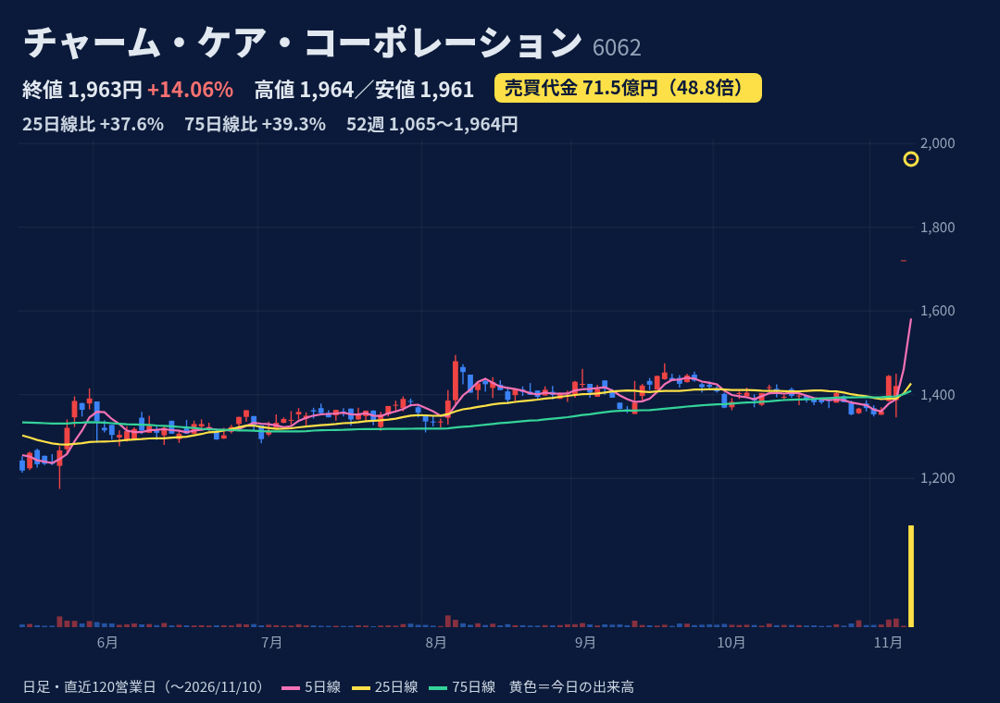
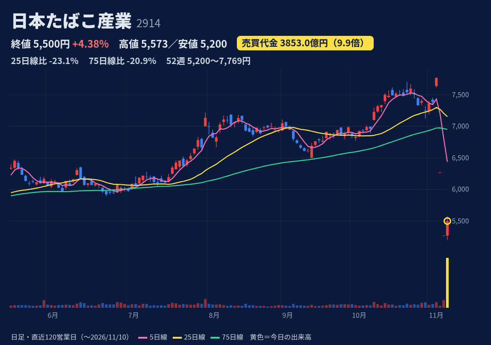
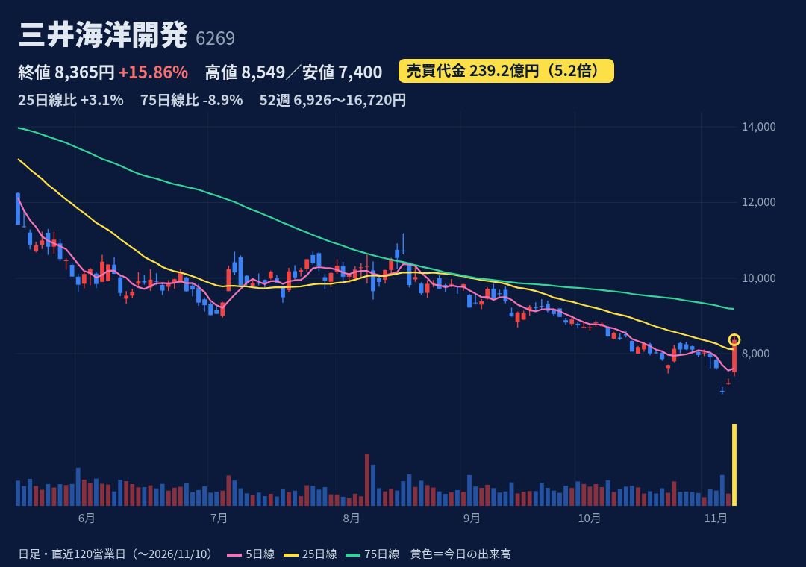
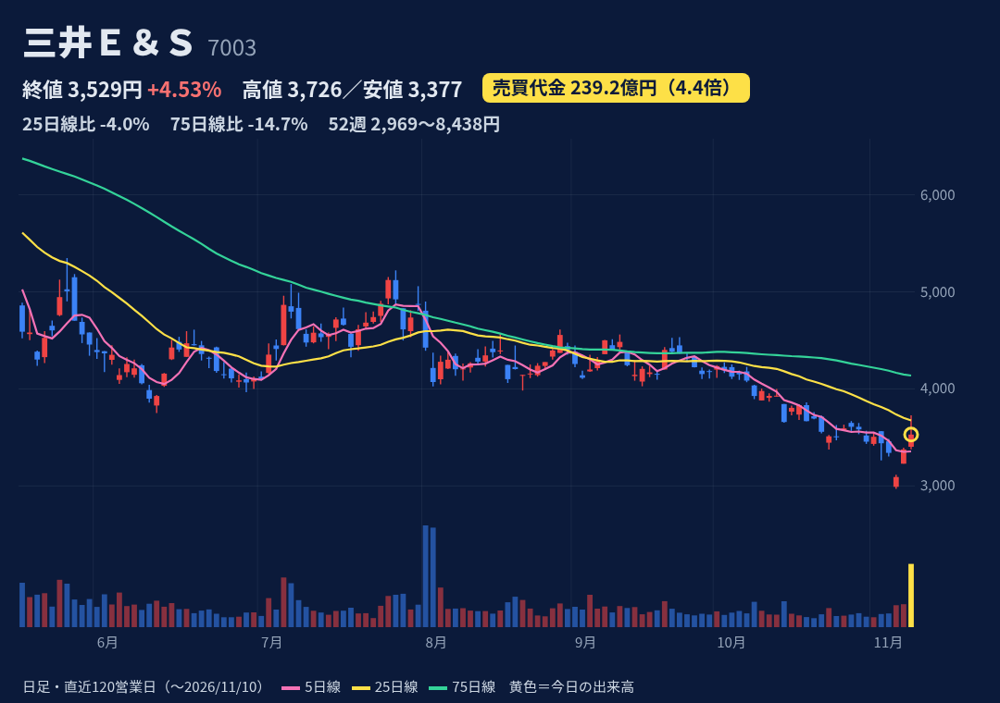
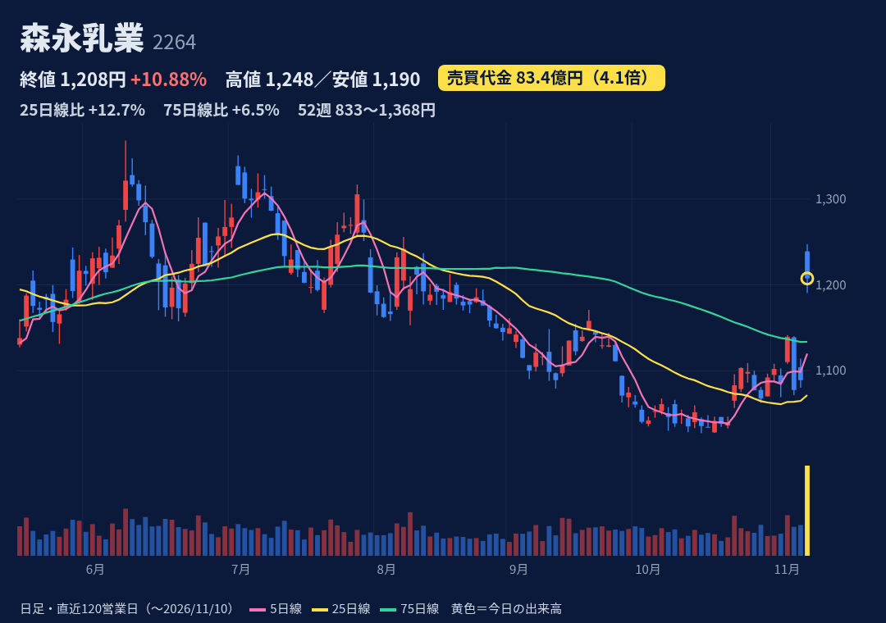
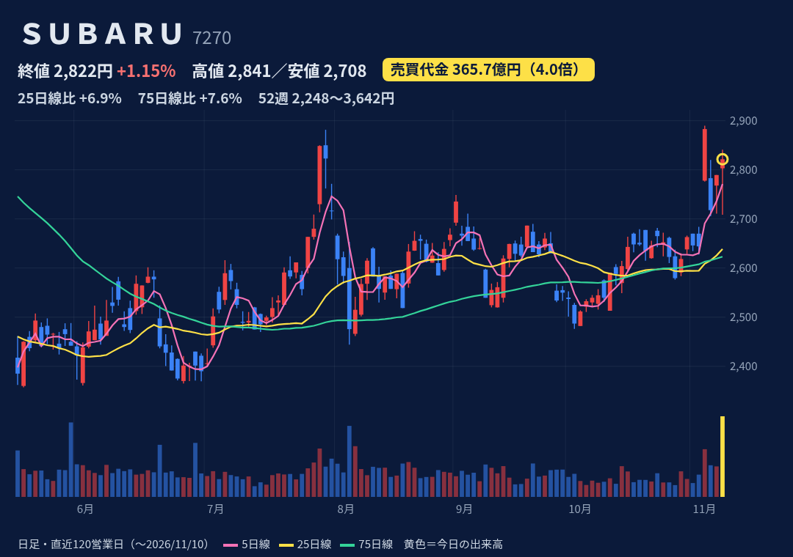

関西中心に有料老人ホームを運営（高価格帯に注力）。不動産活用・リースバックも。
11/6 18:00 シップヘルスケアHDによるTOB（1株1,970円、11/6終値比+38.6%）に賛同・応募推奨。完全子会社化・上場廃止予定。期間11/9〜12/21。同時に無配へ修正。
1Q(7-9月)売上124億円+12.5%・営業益15.4億円+39.2%。通期営業益予想59.7億円(+13.0%)据え置きで進捗26%。今期配当は無配に修正。次回決算日は未確認。
11/9は気配のままS高1,721円(売買0.8億)。今日は始値1,963・高1,964・安1,961・終1,963円とTOB価格のすぐ下で横ばい。52週高値更新、25日線(1,427)・75日線(1,409)を大きく上回る。
信用買残24.5万株・売残1.7万株、倍率14.3倍（JPX 11/9）。株探11/6週は倍率11.62倍。日々公表・増担保とも該当なし（JPX 11/9更新分）。
TOB成立後は上場廃止予定。上値はTOB価格1,970円が目安で、不成立なら下落の恐れ。下限は12,194,500株(所有割合37.25%)。

世界大手のたばこ会社（加熱式にも注力）。加工食品も展開。医薬事業は譲渡済み。
今日の新規開示は確認できず。11/6 8:00・11/9 8:00開示＝ロシア大統領令でロシア現地法人全社が一時管理に。2日連続S安後の反発（自律反発・売り一巡は推測）。
3Q累計(1-9月)売上2兆9,914億円+13.6%・営業益9,477億円+24.2%。通期営業益予想1兆410億円で進捗91%。ロシアは売上の約10%・調整後営業利益の約25%（会社開示）。次回は本決算（前年は2/12、今回日付未確認）。
11/6 S安6,269円、11/9 S安5,269円。今日は始5,269・高5,573・安5,200・終5,500円の陽線(上ヒゲ短め)。52週高値7,769円(11/5)から-29%で年初来安値圏、25日線7,154円を大きく下回る。
信用買残164.8万株・売残138.5万株、倍率1.19倍（JPX 11/9）。売残は10/30週28.5万株→11/6週127.5万株に急増（株探）。日々公表・増担保とも該当なし（JPX 11/9更新分）。
ロシア事業の資産は約1.5兆円(のれん含む、うち現預金約3,600億円)・負債約2,000億円（9月末概算）。業績影響は精査中で、減損等の可能性は未確認。超大型株で値幅は出にくい。

浮体式の石油・ガス生産貯蔵設備（FPSO）の世界大手。設計・建造からリース・運転・保守まで一貫。
11/10 12:30 3Q決算と通期上方修正（営業益4.6億→5.2億ドル、+13%）。FPSO建造の進捗が想定超・操業好調。同時に自社株買い（上限200万株・2.9%・100億円、11/11〜1/29、全株消却）。
3Q累計(1-9月)売上36.9億ドル+10.1%・営業益3.9億ドル+27.8%。修正後の通期営業益5.2億ドルで進捗75%。配当200円据え置き。次回は本決算（前年2/13、日付未確認）。
始7,514・高8,549・安7,400・終8,365円の大陽線。25日線は回復、75日線9,183円は下。52週高値16,720円から-50%。代金はYahoo出来高×終値≒247億円・株探239.6億円で、7003と同額は偶然（誤りではない）。
信用買残128.4万株・売残3.6万株、倍率36.1倍（JPX 11/9）と買い長。買残は10/9週159万株から減少傾向（株探）。日々公表・増担保とも該当なし（JPX 11/9更新分）。
信用買残が厚く戻り売りが出やすい（倍率36倍）。機能通貨は米ドルで円換算は為替の影響を受ける。11/5にJPモルガン・アセットが保有比率低下を報告。

船舶用ディーゼルエンジン首位。舶用推進システムと港湾クレーン等の物流システムが両輪。
11/10 14:30 中間決算と通期上方修正（営業益340億→400億円、純益310億→330億円）、期末配当30→35円に増配。同時に子会社・加地テック株(51.06%)をTOB後に売却し連結除外予定と発表。
中間期 売上1,750億円+5.7%・営業益207億円+4.8%。修正後の通期営業益400億円(+6.3%)で進捗52%。純益330億円予想(-14.2%)。次回3Q決算の日付は未確認。
始3,403・高3,726・安3,377・終3,529円、上ヒゲ長い陽線。25日・75日線とも下。52週高値8,438円から-58%。代金はYahoo出来高×終値≒238億円・株探239.3億円で、6269と同額は偶然（誤りではない）。
信用買残311.8万株・売残10.0万株、倍率31.2倍（JPX 11/9）と買い長。買残は10/9週416万株から減少中（株探）。日々公表・増担保とも該当なし（JPX 11/9更新分）。
信用買残が厚い（倍率31倍）。前回8/3の決算後は8/3-9.1%・8/4-8.0%と急落した前例。舶用推進で新機種の開発コスト増（会社説明）。

乳業大手。乳飲料・アイス・チーズ等が主力。乳酸菌素材や海外（独ミライ社）も展開。
11/9 15:30 中間決算と通期上方修正（営業益340億→390億円+14.7%、純益210億→230億円）、期末配当13→16円に増配。主因は独子会社MILEI(ミライ社)など海外事業の好調。
中間期 売上3,008億円+2.6%・営業益211億円+1.5%。修正後の通期営業益390億円(+13.1%)で進捗54%。7/1に1→4株分割済み。次回3Q決算の日付は未確認。
前日高値1,114円から窓を開けて始1,239・高1,247.5(9:14)・安1,190.5・終1,207.5円。始値割れの陰線で上値は重め。25日線1,072円・75日線1,134円を上回る。52週高値1,368円(6/9、分割調整後)まで約13%。
信用買残55.8万株・売残3.7万株、倍率15.3倍（JPX 11/9）。株探11/6週は倍率8.04倍。日々公表・増担保とも該当なし（JPX 11/9更新分）。
寄り天の陰線で、窓（1,114〜1,190.5円）埋めの下げがありうる。増益は海外事業頼みで、ホエイ等の市況の影響（株探記事）。

北米主体の自動車メーカー（水平対向エンジン・4WD・安全技術）。航空機事業も。トヨタと提携。
11/10 13:00 中間決算。営業益1,160億円+12.9%、7-9月期の最終益は+49%（株探）。通期予想・配当予想は据え置き。同時にJ-ESOP-RS向け自己株15.8万株の処分。
中間期 売上収益2兆5,134億円+5.4%・営業益1,160億円+12.9%。通期営業益予想1,500億円(+273.9%)据え置きで進捗77%。円安・米関税影響の減少が増益要因。次回3Q決算の日付は未確認。
始2,803・高2,841(13:01)・安2,708.5(13:03)・終2,821.5円、下ヒゲの陽線。25日・75日線の上。52週レンジ（2,248〜3,642円）の41%の位置。11/5も+9%（理由未確認）。
信用買残59.9万株・売残13.3万株、倍率4.5倍（JPX 11/9）。買残は10/9週151万株から減少（株探）。日々公表・増担保とも該当なし（JPX 11/9更新分）。
上げ幅は+1.15%と小さく、売買急増は決算での売り買い交錯の可能性（推測）。通期予想を据え置いたため、進捗77%でも上振れ期待は確認できない。北米依存が高い。
株価・出来高・信用残：取引所データ。材料：各社開示・各社報道。